Solving Quadratic Systems of Equations via Truncated Wirtinger Flow
For random designs: computational cost of TWF 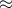 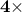 that of solving Least Squares of the same size
| 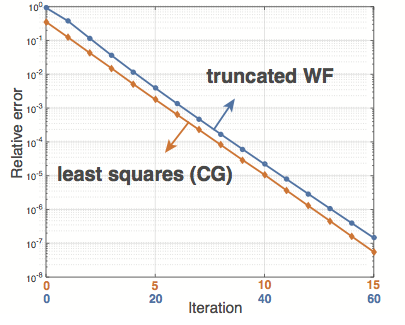 | Truncated Wirtinger Flow (TWF) is a non-convex procedure for solving quadratic equations: 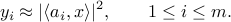
|
 is unknown.
is unknown.Solving Random Quadratic Systems of Equations Is Nearly as Easy as Solving Linear Systems. Y. Chen and E. J. Candès.
We consider the fundamental problem of solving quadratic systems of
equations in  variables, where 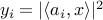,
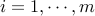 and
variables, where 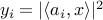,
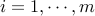 and  is
unknown. We propose a novel method, which starting with an initial
guess computed by means of a spectral method, proceeds by minimizing
a nonconvex functional as in the Wirtinger flow approach.
There are several key distinguishing
features, most notably, a distinct objective functional and novel
update rules, which operate in an adaptive fashion and drop terms
bearing too much influence on the search direction. These careful
selection rules provide a tighter initial guess, better descent
directions, and thus enhanced practical performance. On the
theoretical side, we prove that for certain unstructured models of
quadratic systems, our algorithms return the correct solution in
linear time, i.e. in time proportional to reading the data
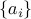 and
is
unknown. We propose a novel method, which starting with an initial
guess computed by means of a spectral method, proceeds by minimizing
a nonconvex functional as in the Wirtinger flow approach.
There are several key distinguishing
features, most notably, a distinct objective functional and novel
update rules, which operate in an adaptive fashion and drop terms
bearing too much influence on the search direction. These careful
selection rules provide a tighter initial guess, better descent
directions, and thus enhanced practical performance. On the
theoretical side, we prove that for certain unstructured models of
quadratic systems, our algorithms return the correct solution in
linear time, i.e. in time proportional to reading the data
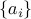 and  as soon as the ratio 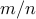
between the number of equations and unknowns exceeds a fixed
numerical constant. We extend the theory to deal with noisy systems
in which we only have
as soon as the ratio 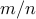
between the number of equations and unknowns exceeds a fixed
numerical constant. We extend the theory to deal with noisy systems
in which we only have
 and prove that our algorithms achieve a statistical accuracy, which
is nearly un-improvable. We complement our theoretical study with
numerical examples showing that solving random quadratic systems is
both computationally and statistically not much harder than solving
linear systems of the same size — hence the title of this paper. For
instance, we demonstrate empirically that the computational cost of
our algorithm is about four times that of solving a least-squares
problem of the same size.
and prove that our algorithms achieve a statistical accuracy, which
is nearly un-improvable. We complement our theoretical study with
numerical examples showing that solving random quadratic systems is
both computationally and statistically not much harder than solving
linear systems of the same size — hence the title of this paper. For
instance, we demonstrate empirically that the computational cost of
our algorithm is about four times that of solving a least-squares
problem of the same size.